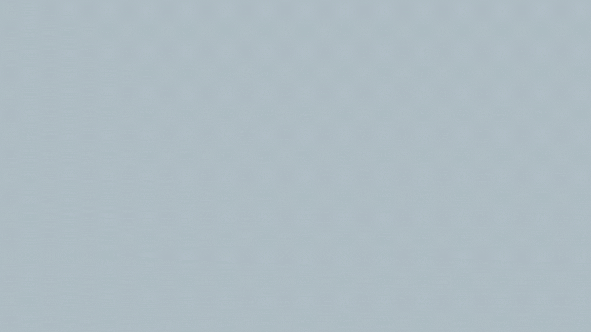
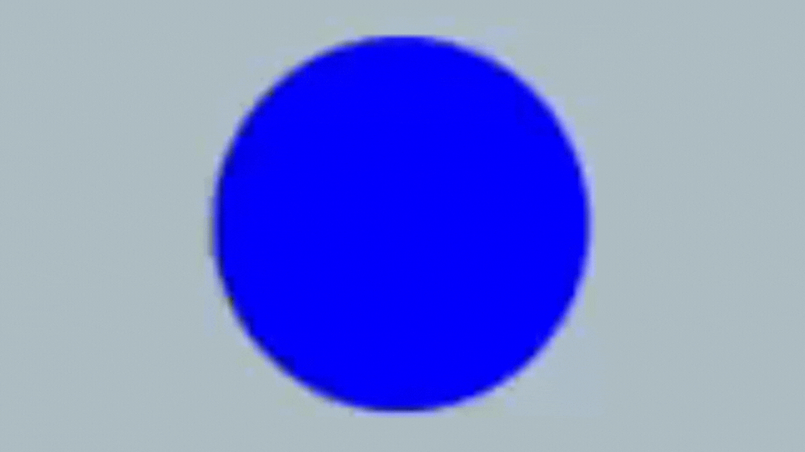
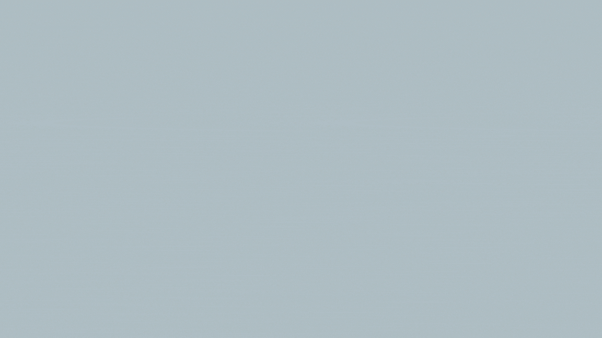

Nasıl Oynanır?

Oyuna 3 tane topla başlanır. Toplara tıklandığında rengine göre farklı puanlar kazanılır.

Kırmızı top 5,pembe top 10, mavi top 15 puan kazandırır. Buna oranla en hızlı ekrandan kaybolan top en çok puan getiren toptur.

Ekranda top kalmayıncaya dek oyun devam eder.